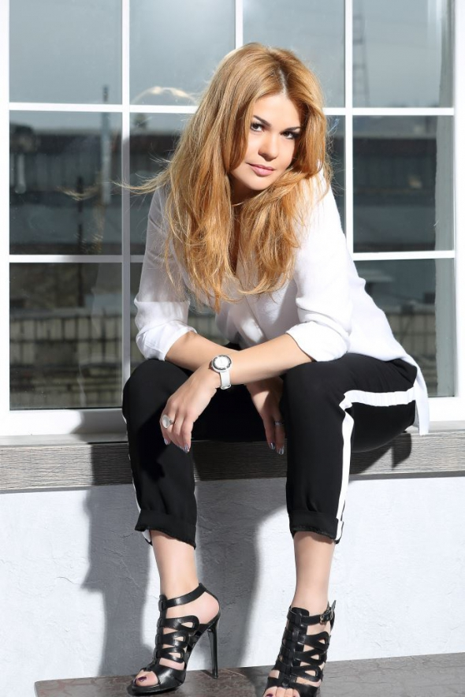
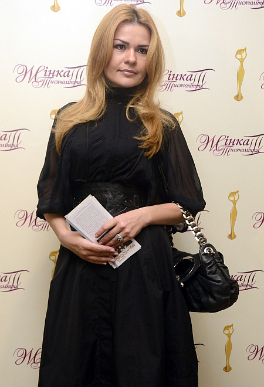

Дизайнер Айна Гассе належить до нового покоління українських дизайнерів. Вона зрозуміла своє призначення після першої перемоги на студентському конкурсі з дизайну "Печерські каштани".
Власну дизайн-студію відкрила у 2000 році, тоді ж створила першу професійну колекцію pret-a-porter. Колекції одягу від Айни Гассе привертають увагу провідних фахівців світової моди: Люсьєна Пелла-Фіне, Лучано Барбера,
У 2005 році Айна відкрила модний будинок Aina Gacсe. Через три роки презентувала свої моделі на Тижні високої моди в Римі. Восени того ж року її колекція потрапила на подіум Тижня високої моди в Мілані. Обидві колекції отримали високу оцінку європейських модних критиків.
З 2009-го Гассе випускає нову лінію одягу для молодих людей - FREE CHOICE.
Айна Гассе - єдиний український дизайнер, зареєстрований в Італійській палаті моди. Вона шиє вбрання для Юлії та Євгенії Тимошенко. Також її послугами дизайнера користуються Анна Турчинова, Людмила Омельченко, Марина Кінах.